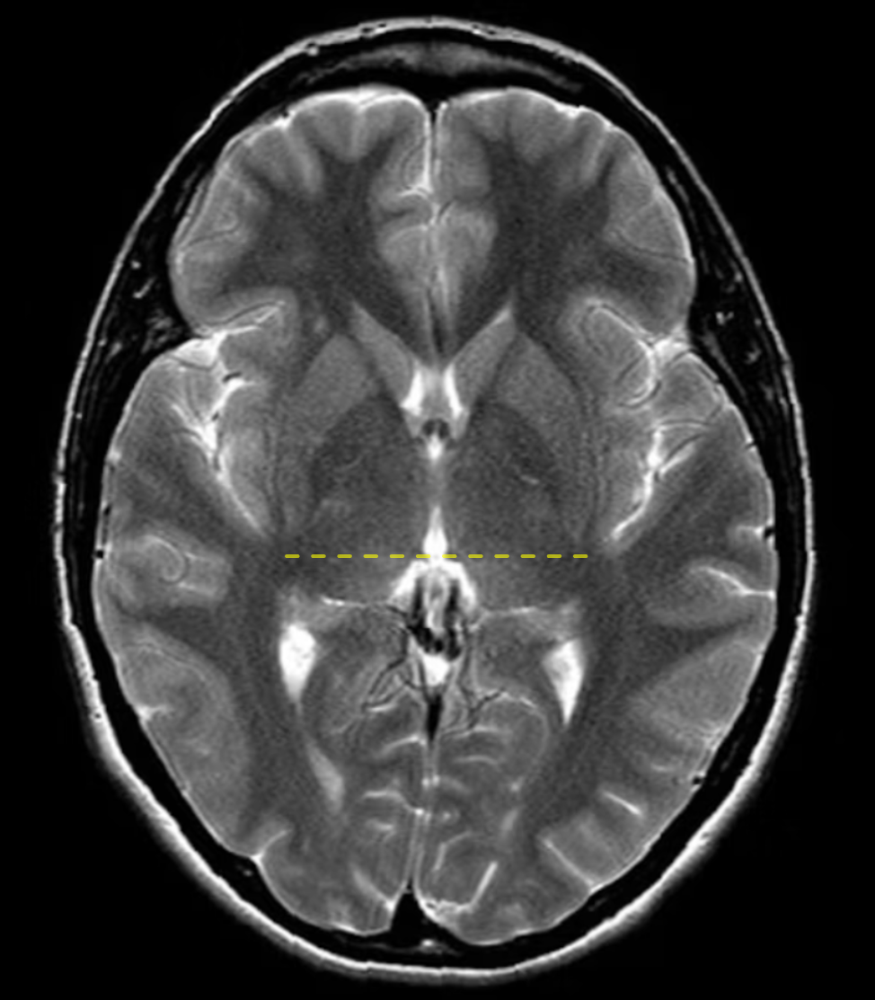
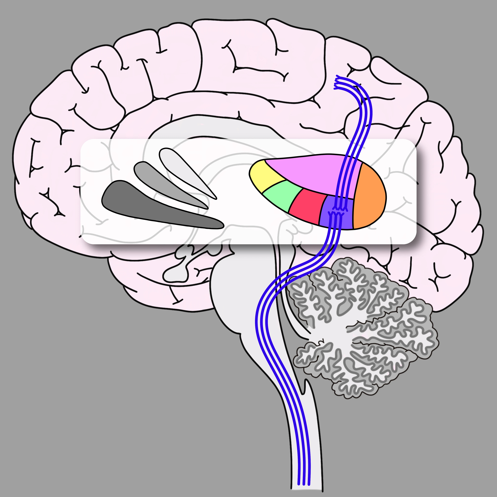

Nearly everything that our brain does directly involves the thalamus in some way. A notable exception is olfaction, where signals from sensory neurons in the nasal epithelium travel straight to the olfactory cortex. Otherwise, if your brain can do it, the thalamus is probably involved. The corollary of this is that damage to this area can cause a wide range of symptoms, although often in predictable ways once you understand the anatomy. By the end of this section, you will be familiar with the location and function of the most clinically relevant radiologically identifiable thalamic nuclei and be able to use that information to understand the sequalae of thalamic pathology.
Nuclei: A Simplified Approach
The thalamus is complicated. Depending on who you ask, it contains between 38 and 60 unique nuclei. Broadly speaking, nuclei are places where white matter tracts converge to a group of neuronal cell bodies. There are nuclei in the thalamus that send and receive signals via tracts that go to specific, localized cortical areas, while others are more diffuse and nonspecific. The former tend to be the most clinically relevant and, luckily for us, the easiest to identify on imaging.
Figure 2. Axial T2 weighted image with a yellow dotted line drawn through the habenulae.
To find these nuclei, you will need to know a few landmarks. The thalamus is bordered medially by the third ventricle and laterally by the posterior limb of the internal capsule (Figure 1.). To start picking out some nuclei, you should scroll to the level of the habenulae in the axial plane and draw a horizontal line through them, as shown to the right (Figure 2.).
.png)
Figure 3. Axial T2 weighted image with highlighted thalamic nuclei.
The area of the thalamus posterior to the line is called the pulvinar, which means couch or chair lined with pillows in Latin; think of it of the couch that the rest of the thalamus sits on. There are three nuclei that abut the line anteriorly. From lateral to medial, they are the ventral posterolateral (VPL) nucleus, centromedian (CM) nucleus, and dorsomedian (DM) nucleus. Moving anteriorly while wrapping around the DM, there is the ventral lateral (VL) nucleus, ventral anterior (VA) nucleus, and anterior nucleus (AN). As alluded to, this is a simplified map, and you can get much more granular than this. We will introduce some additional complexity only when necessary in the following sections.
Function
FFigure 4. Ventral posterolateral (VPL) nucleus.
The VPL takes sensory information from the medial lemniscus (fine touch, vibration, proprioception) and the spinothalamic tract (crude touch, pain, temperature, and pressure) and connects via dense reciprocal pathways to the primary somatosensory cortex located in the post-central gyrus (Figure 4.).
.jpg)
Figure 5. Ventral lateral (VL) nucleus.
The VL transmits motor information from the basal ganglia and cerebellum to the motor, pre-motor, and supplemental motor cortices (Figure 5.).
.jpg)
Figure 6. Ventral anterior (VA) nucleus.
The VA transmits motor information from the basal ganglia and deep cerebellar nuclei quite diffusely to the cortex of the frontal lobe, including motor cortices like the VL but also to the prefrontal cortex (Figure 6.); this implies that the VA is involved in higher-order motor function and motor decision making.
.jpg)
Figure 7. Anterior nucleus (AN).
The AN transmits information from the hippocampus and mamillary bodies via the mammillothalamic tract to the cingulate gyrus (Figure 7.), which is an important pathway for memory and a component of the Papez circuit (Figure 8.).
.jpg)
Figure 8. The Papez circuit.
.jpg)
Figure 9. Dorsomedian (DM) nucleus.
The DM transmits information between the amygdala, limbic basal ganglia, and olfactory cortex to the prefrontal association cortex. It is important in memory and attention (Figure 9.). The pulvinar transmits information between the tectum and the parietotemporal-occipital association cortex. It is important in the processing of visual information and attention. `
Quiz 1
Question 1: Where is the lesion?
Correct Answer: VPL nucleus of the thalamus
Quiz 2
Question 2: Would you expect the patient's deficits to be motor or sensory?
Correct Answer: Sensory.